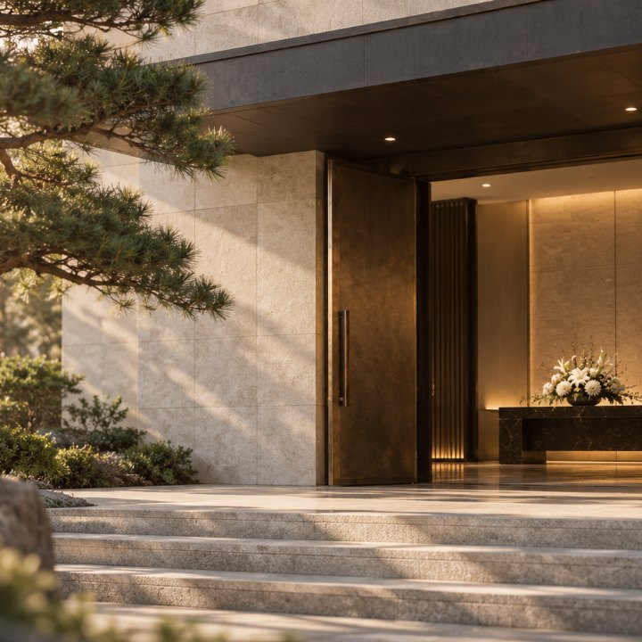
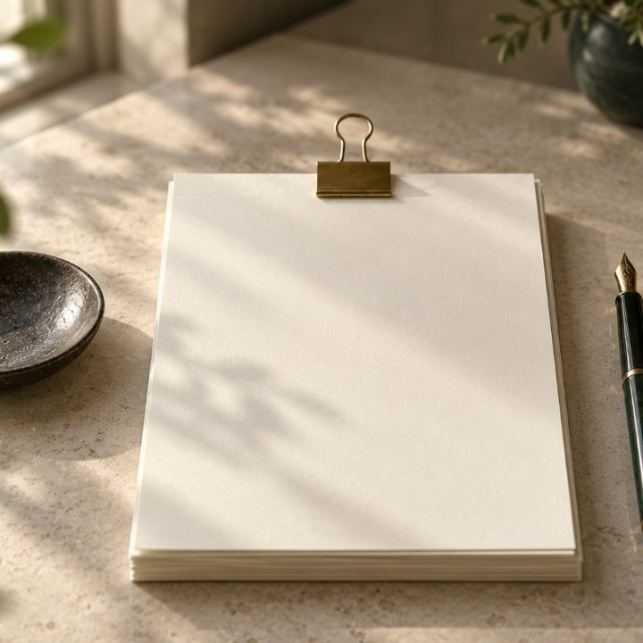
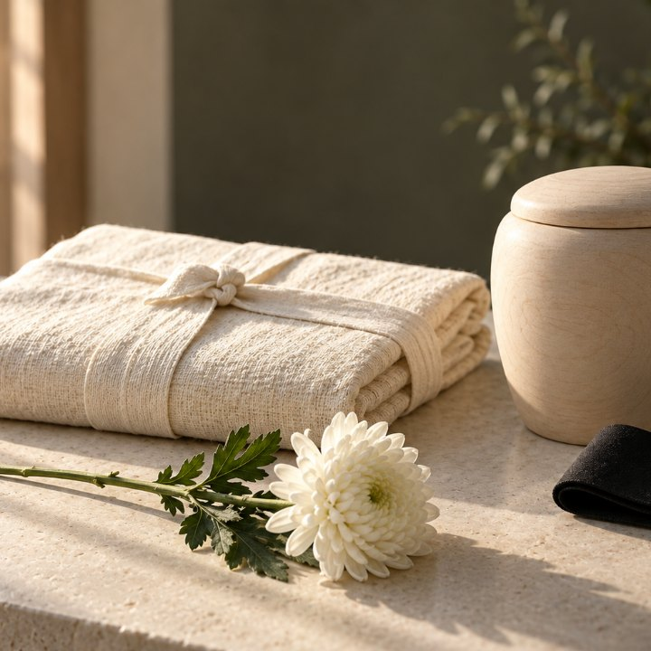
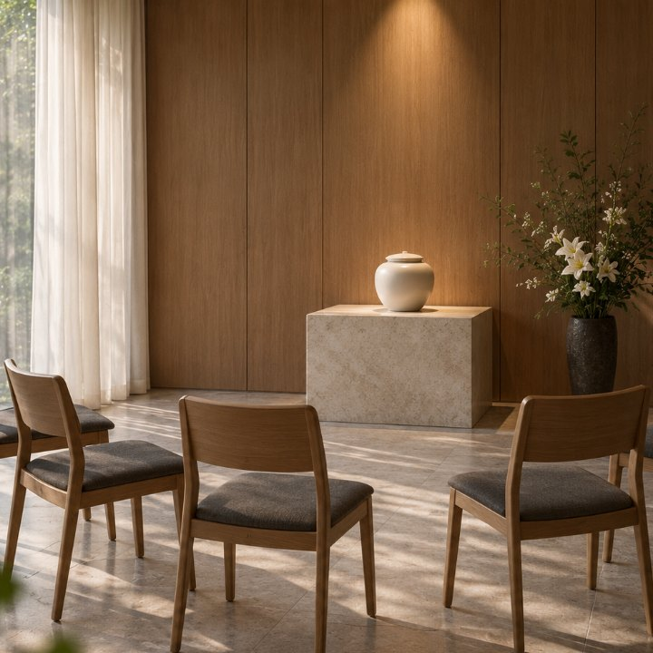
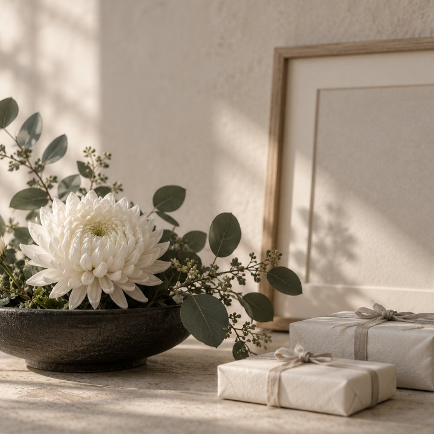

미리 받지 않습니다. 단가표를 먼저 드리고, 정산서에 없는 돈은 요구하지 않습니다. 요구하면 저희 몫은 0원입니다.
2006년부터 장례 현장에서. 장례지도사가 임종부터 발인까지 사흘을 가족 곁에서 함께합니다.
장례가 끝나도 끝이 아닙니다. 기일 전에 저희가 먼저 연락드립니다. 해마다, 전부 무료.
지금
임종 직후 여섯 시간. 전화 한 통이면 이 여섯 시간을 저희가 대신 뜁니다.
지금 계신 곳에서
가까운 순서로, 전화와 길찾기까지. 지역을 골라 찾을 수도 있습니다.

오늘 안에
링크 하나에 빈소 지도와 전화까지. 카카오톡으로 보내면 끝입니다.
읽고 가시는 글
무엇을 적고 무엇을 빼는가. 종교에 따라 달라지는 표현과 조문 답장까지.
사흘
미리 받지 않습니다. 단가표를 먼저 드리고, 장례가 끝난 뒤 쓰신 만큼만 한 번 정산합니다.

다섯 가지 묶음
가장 작은 무빈소부터 정성껏 모시는 3일장까지. 묶음은 출발점, 정산은 쓰신 항목대로.

먼저 드립니다
출발하기 전에 항목마다 값을 적어 드립니다. 정산서에 없는 항목은 청구하지 않습니다.
NEW
빈소 없이 가족끼리 조용히. 빠지는 것과 남는 것, 비용은 절반 아래.

네 번의 예배
임종·입관·발인·하관 예배로 흐릅니다. 교회와 상조가 나누는 일.
계산기
조건을 넣으면 대략의 액수가 나옵니다. 장례비가 대체로 얼마나 드는지.
점검
지금 붓는 상조가 괜찮은지. 해약환급금을 계산해 보면 대략 드러납니다.
여덟 문항
적금인 줄 알았는데 상조 결합상품이었다면. 여덟 가지만 짚어 보면 압니다.
해마다, 전부 무료
기일 전에 저희가 먼저 연락드립니다. 첫 기일 전 짧은 추모 영상, 해마다 잊지 않는 안부. 원치 않으시면 보내지 않습니다.
소개
화환·답례품·영정사진·유품정리. 저희가 직접 하지 않는 일은 소개의 원칙과 함께. 소개료가 있으면 있다고 적습니다.

김병호 · Since 2006
장례가 돈 걱정이 아니라, 고마움으로 남도록. 왜 이 일을 시작했는지.

저희가 모신 장례
어느 장례식장에서 며칠, 무엇이 어려웠는지. 유족 동의를 받고 적습니다.
열세 가지
가입 없이 지금 바로 되나요. 추가 비용은, 장례식장 비용은, 몇 시간 안에 오나.
카드의 사진은 참고용 이미지입니다. 실제 시설·용품·현장과 다를 수 있습니다.